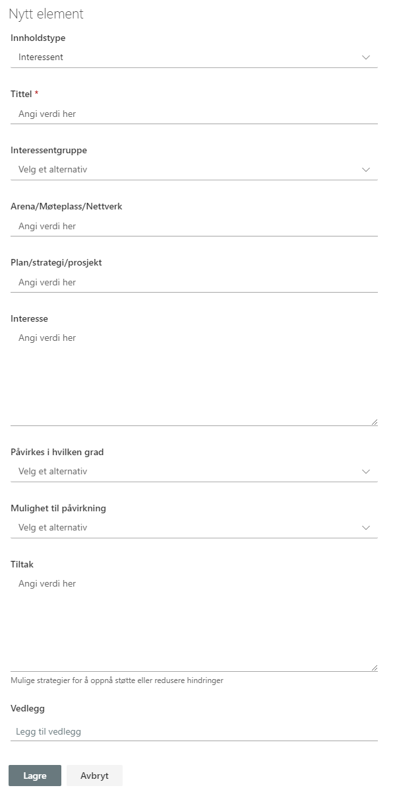

Interessentregisteret brukes til å organisere og dokumentere interessenter som påvirkes av, eller som kan påvirke, prosjektet.
Interessentgruppe er et felt med følgende forhåndsdefinerte verdier:
Vedlegg kan legges til på enkelt elementer. Merk at disse vedleggene bare vil bli lagret i denne listen, og blir ikke vist i dokumentbiblioteket.
I noen tilfeller vil det være en standardliste med interessenter som er relevante for de fleste prosjekter. Disse kan vedlikeholdes på porteføljenivå og genereres ved opprettelse i nye prosjekter.
